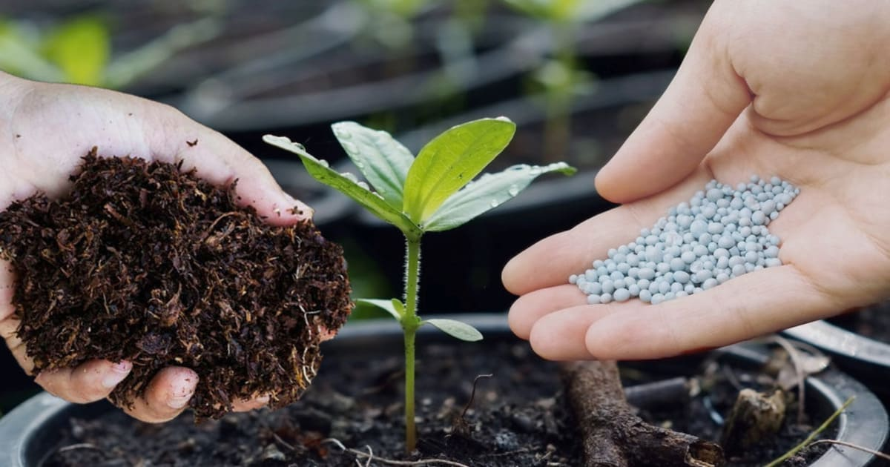
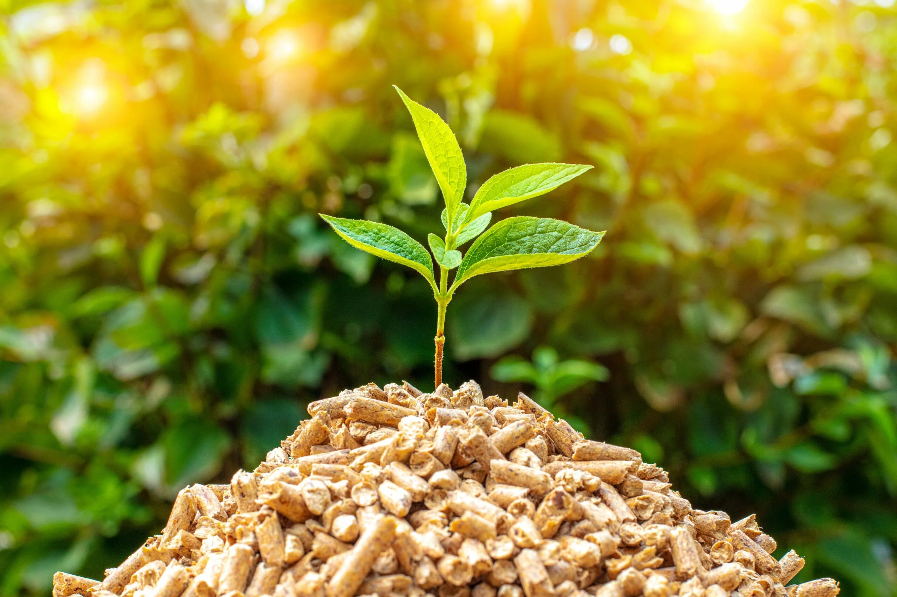
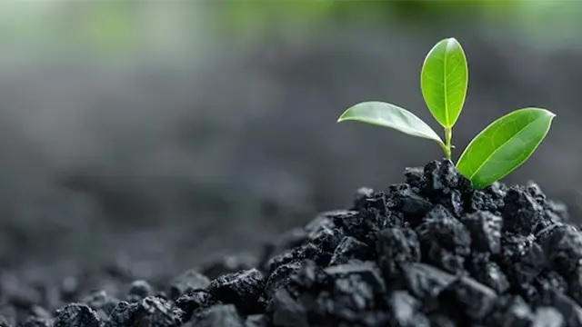

Kompos Organik
Pupuk organik dari tandan kosong sawit.
PalmInsight membantu industri kelapa sawit mengelola limbah secara lebih efektif melalui pendekatan digital, pemantauan data, dan solusi ekonomi sirkular yang ramah lingkungan.
Mitra Industri
Ton Limbah Terolah
Efisiensi Monitoring
Berbasis Keberlanjutan

PalmInsight membantu perusahaan perkebunan dan pengolahan sawit dalam memantau, mengelola, dan mengoptimalkan limbah hasil produksi.

Pupuk organik dari tandan kosong sawit.

Energi alternatif ramah lingkungan.

Nutrisi tanaman hasil fermentasi limbah.

Alternatif pakan bernilai ekonomis.
Limbah sawit dikumpulkan dari area perkebunan dan pabrik pengolahan.
Data limbah dicatat dan dianalisis secara digital dan real-time.
Limbah dikonversi menjadi biomassa, kompos, biochar, dan produk lain.
Produk hasil olahan dimanfaatkan kembali untuk sektor industri.
PalmInsight membantu perusahaan mengurangi limbah, meningkatkan efisiensi operasional, serta menciptakan peluang ekonomi baru dari hasil pengolahan limbah sawit.

Bergabung bersama PalmInsight untuk mengoptimalkan pengelolaan limbah dengan teknologi digital.
Mulai KonsultasiTim PalmInsight siap membantu perusahaan dalam mengelola limbah sawit secara lebih efektif.